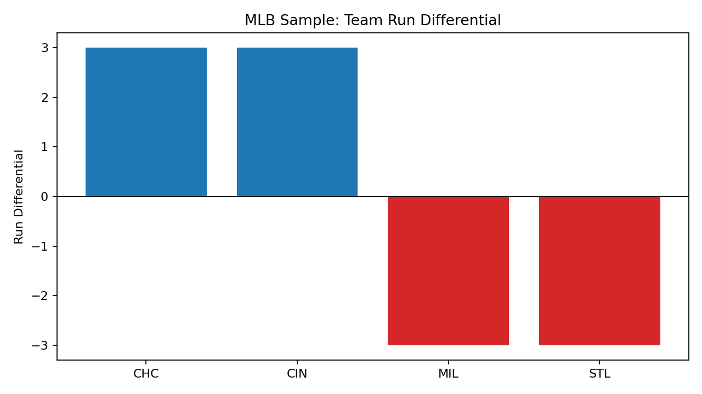

Risk
Duplicate processing
If the same bundle is received twice, the system needs an explicit way to avoid silently duplicating analytical state.
A small but complete analytics system designed around a practical engineering question: how do you make derived metrics trustworthy when inputs arrive as structured bundles and processing may fail, repeat, or resume?
The project is intentionally not a giant sports-data platform. Its value is the complete chain from structured input through validation, persistence, derivation, and reviewable output.
If the same bundle is received twice, the system needs an explicit way to avoid silently duplicating analytical state.
Missing files or invalid structure should fail visibly instead of producing partially trusted downstream metrics.
A chart should be connected to a known fixture/input and a reproducible sequence of derivations.
Validate: inspect the bundle contract before accepting data.
Persist: write normalized game/player records and import state into SQLite.
Derive: compute team standings and player aggregates from the stored source records.
Verify: compare repeatable fixture outputs and smoke-test the workflow.
Display: expose derived tables through a simple analytical dashboard and proof images.
The same habits apply outside sports data: validate incoming records, protect against duplicate processing, trace failures, write queryable state, and make the output explainable to another person.

Example visual output generated from the public fixture workflow. The demonstration dataset is intentionally small so the processing path can be reproduced quickly.

A second artifact shows that the same normalized state can support multiple derived analytical views.
A local relational store keeps the project reproducible and queryable without introducing infrastructure that is not needed for the portfolio-scale workload.
Stable test inputs separate pipeline correctness from network availability and make repeatable verification possible.
Import ledgers, logs, archive/quarantine behavior, and locking make operational state visible instead of implicit.